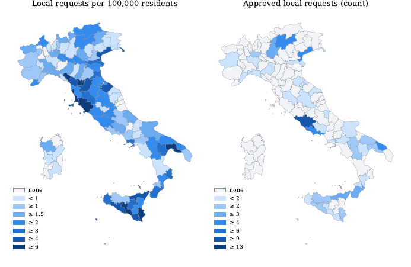

Tommaso Landi
Graduate Student in Economics · Sant'Anna School of Advanced Studies & University of Pisa
Research Email CV LinkedIn GitHub
I am a graduate student in the joint Master's Degree in Economics of the University of Pisa and the Sant'Anna School of Advanced Studies (General Economics track, 2025–2027). My training focuses on econometrics and data analysis, with a particular interest in macroeconomics and time series.
Interests
Macroeconomics · Time series
Education
- 2025–2027 (expected)Master's Degree in Economics, General Economics Track
Sant'Anna School of Advanced Studies & University of Pisa
Joint degree, fully taught in English. Current average: 28/30.
Relevant courses: Advanced Macroeconomics, Advanced Econometrics, Advanced Microeconomics, Advanced Statistics, Macroeconometrics, Financial Econometrics, Financial Economics, Growth Theory. - 2021–2024Bachelor's Degree in Political Science, Economics Track
University of Pisa
Thesis: Emission Permits and the EU ETS (supervisor: Prof. Pench), on tradable permits as a market-based climate policy instrument.
Relevant courses: Microeconomics, Macroeconomics, Statistics, Economic Policy.
Professional Experience
- Mar–Apr 2024Intern, INPA S.p.A., Vinci (Italy)
- Market research on the pickles sector, identifying potential market niches and consumer demand trends.
- Optimization of business processes: goods-unloading logistics and product analysis using bills of materials.
Skills
| Econometrics | Time series (ARCH/GARCH, VAR, local projections), panel data methods, regression analysis |
| Programming | R, gretl, LaTeX |
| Software | MS Office (Word, PowerPoint, Excel) |
| Languages | Italian (native) · English (C1) · Spanish (basic) |
Research
-
Where the Votes Are: Electoral Strength and Local Spending Requests in Italian Budget Laws, 2023–2027
Working paper, v2, November 2026
Every amendment to the five budget laws of the current legislature, in both chambers: 24,977 proposals with signatory, party, admissibility ruling and outcome. Parties ask for local money where they got more votes in 2022, mostly in opposition and through the legislators elected there; what gets approved depends on whether the signatory sits in the majority.
Abstract
I assemble every amendment tabled in the budget committees of both chambers of the Italian Parliament to the five budget laws of the XIX legislature (2023–2027) and match local spending requests to party vote shares in the 2022 general election. Ten extra points of vote share raise the probability that a party tables a local request for a province by 12.2 percentage points (mean 13.4). The gradient survives comparing parties within the same province and budget, and 137 of 144 alternative specifications are positive and significant. Within regions, it runs largely through the geography of elected deputies. It is driven by opposition parties, while the main governing party targets provinces where it is relatively weaker. Majority proposals are more often ruled inadmissible, but once admitted they are approved 18% of the time against 4% for the opposition.
PDF Interactive explorer, 2023–2027 2027 budget in detail Summary (Italian) Data & replication code